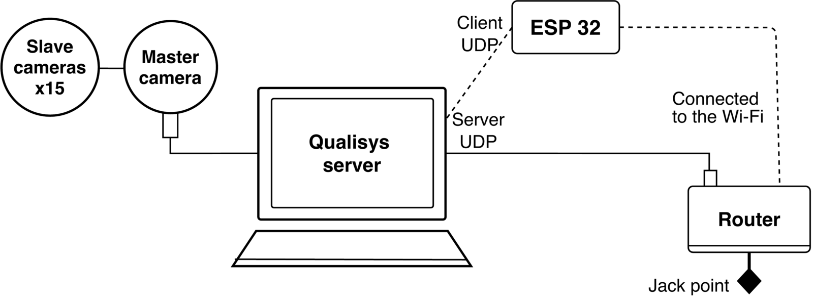
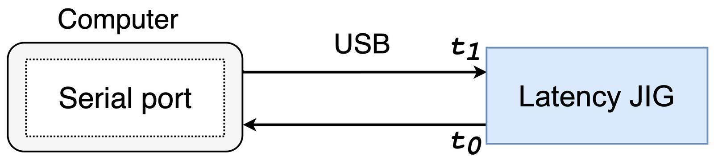
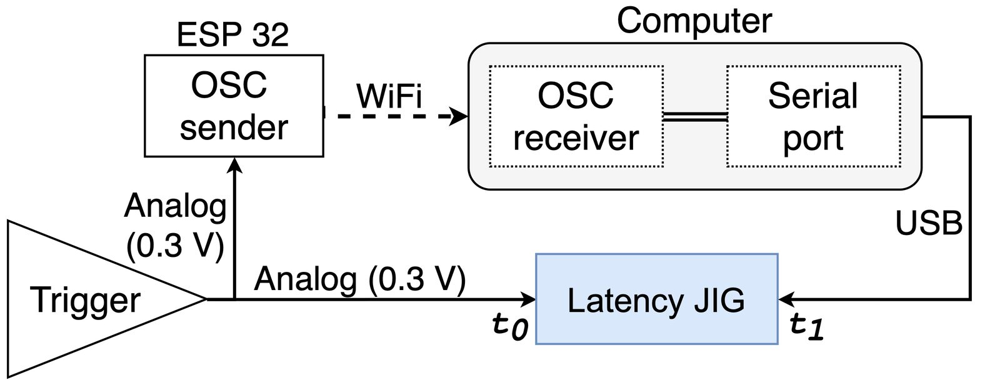
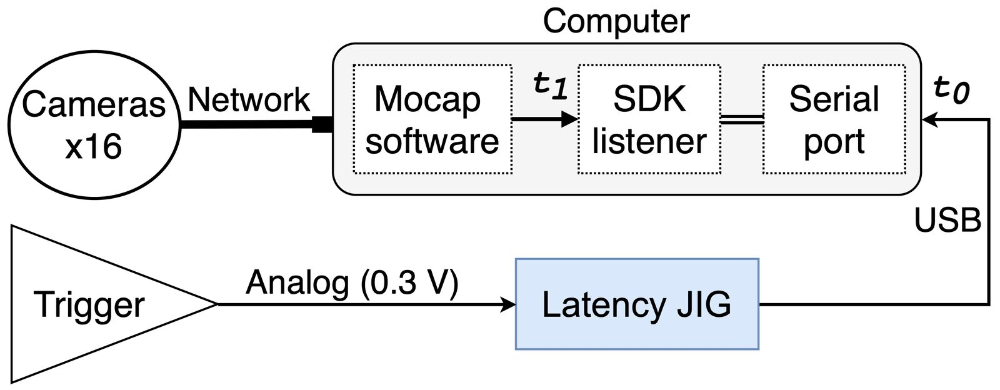
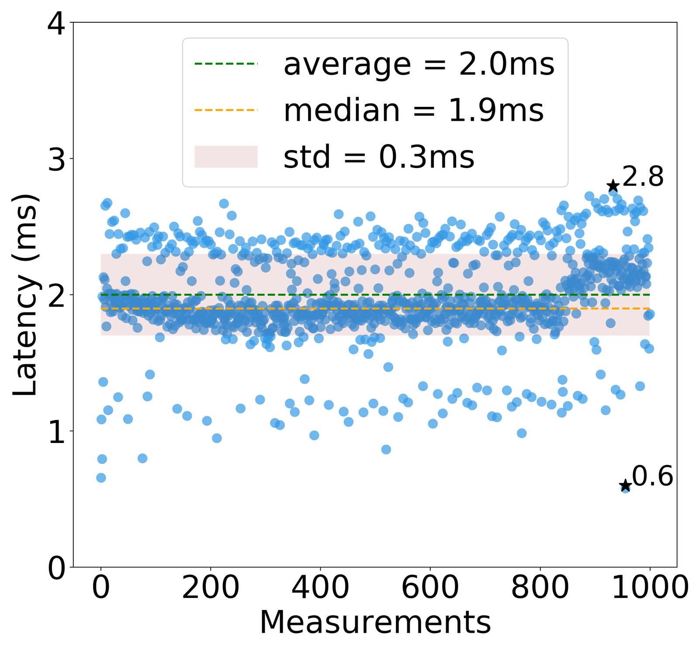
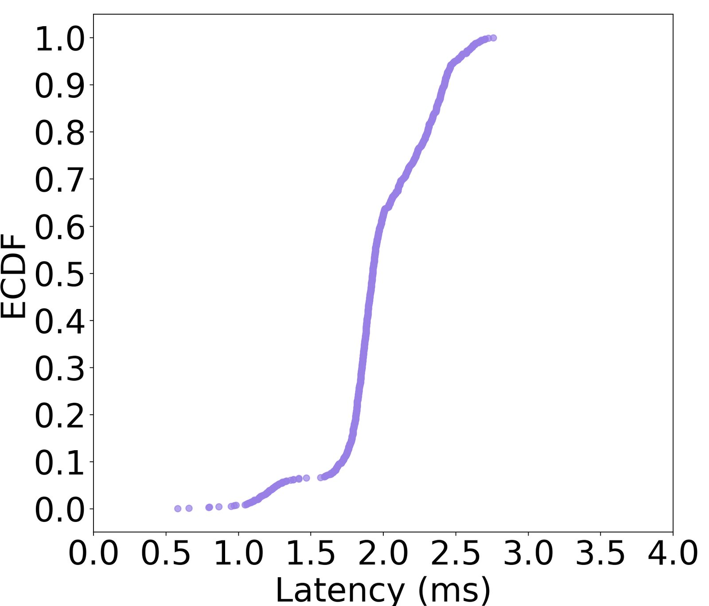
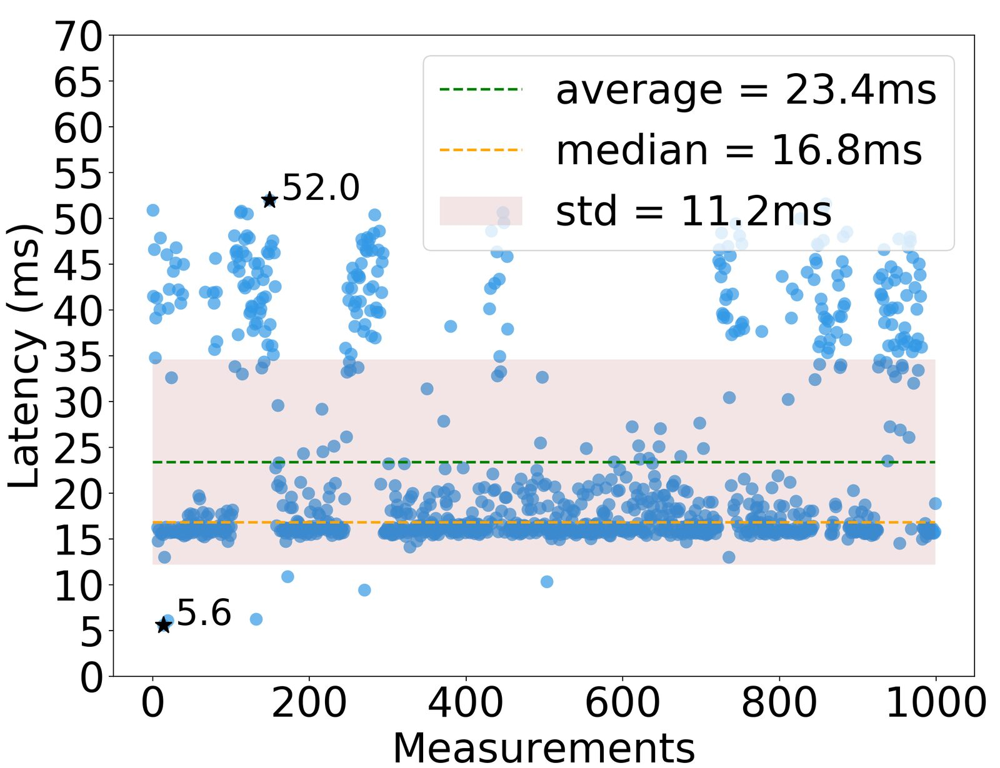
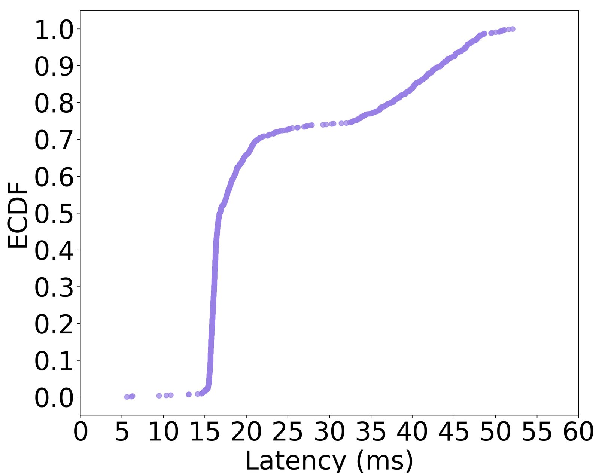
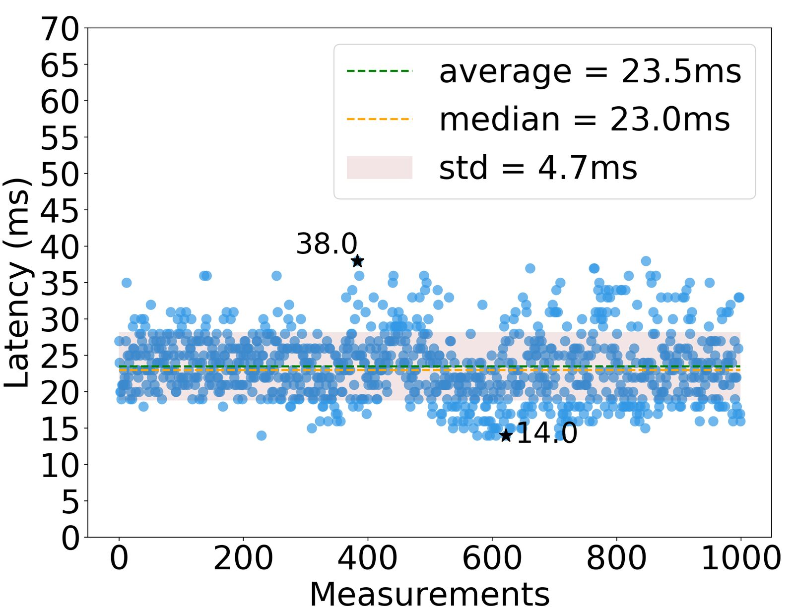
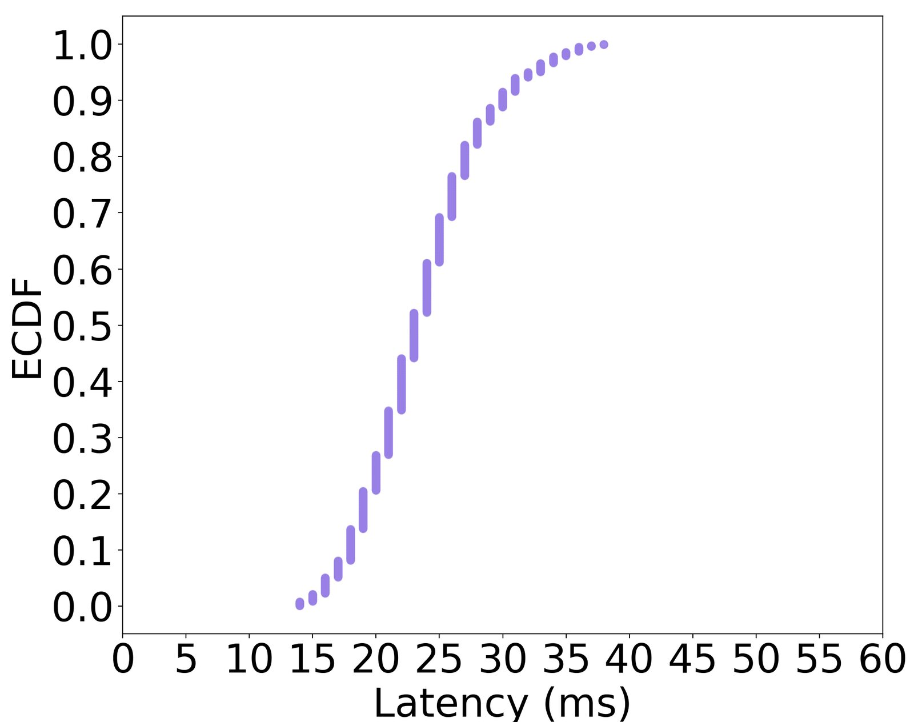

Comparative Latency Analysis of Optical and Inertial Motion Capture Systems for Gestural Analysis and Musical Performance
Abstract
Wireless sensor-based technologies are becoming increasingly accessible and widely explored in interactive musical performance due to their ubiquity and low-cost, which brings the necessity of understanding the capabilities and limitations of these sensors. This is usually approached by using a reference system, such as an optical motion capture system, to assess the signals’ properties. However, this process raises the issue of synchronizing the signal and the reference data streams, as each sensor is subject to different latency, time drift, reference clocks and initialization timings. This paper presents an empirical quantification of the latency communication stages in a setup consisting of a Qualisys optical motion capture (mocap) system and a wireless microcontroller-based sensor device. We performed event-to-end tests on the critical components of the hybrid setup to determine the synchronization suitability. Overall, further synchronization is viable because of the near individual average latencies of around 25ms for both the mocap system and the wireless sensor interface.
Author Keywords
latency analysis, motion capture, inertial sensors
CCS Concepts
•Cross-computing tools and techniques → Empirical studies; Estimations; •Computer systems organization → Real-time systems;
Introduction
Motion-based interfaces for musical expression and offline performance analysis can be built with many different techniques. These include specialized optical optical motion capture systems (mocap), regular cameras with computer vision techniques, and inertial motion unit sensors (IMUs) like accelerometers and gyroscopes. Optical motion capture systems are usually expensive, and require specific installations (several infra-red cameras, many markers on the object/person), and conditions (low illumination, control of environment artifacts to avoid reflection on the cameras) for their use. For these reasons, IMUs are becoming widely employed in interactive musical performances. Moreover, there are several low-cost IMUs accessible for consumer use [1], which can be used as wireless-based sensor interfaces offering transparency, ubiquity and portability.
The increasing use of the wireless-based sensor interfaces leads to the necessity of assessing their capabilities, limitations and signals’ properties. This is usually obtained using a more accurate system, such as optical motion capture (mocap) systems, as reference [2][3]. However, different acquisition sensors connect with other devices using distinct technologies, e.g., USB, MIDI, Ethernet, wireless TCP and UDP. These different protocols, together with their unequal embedded signal processing time, particular system reference clocks, and independent system initialization timings, cause each sensor to have a different delay on the data transmission. Such different delays can make it hard to synchronize the data over time from different independent sources. This is especially relevant for real-time applications with latency requirements about the synchronization process response [4][5].
This work presents an empirical quantification of the latency communication stages between a server and two measuring systems: the Qualisys mocap system and a wireless microcontroller-based sensor device. The latency quantification aims to address data synchronization by characterizing the latency behavior on a hybrid system involving these two measuring systems. We adopted an event-to-end protocol; that is, we measured the time interval between a trigger event and its reception on a server. We empirically analyze both systems’ synchronization latency to determine this hybrid setup’s suitability in real-time sensing applications [2][6].
The empirical method and results described by this work are related to the application-level performance testing of various sensor interfaces [7], and frameworks [8]. Similar to prior literature, we approach the performance measurement by measuring the behavior of tools and SDKs available to the user without diving into low-level details of the implementation of the systems in question. Delving into the implementation details, in this situation, can be unfeasible due to the closed source commercial components. In this work, instead of measuring a single signal processing pipeline, we divide the testing into a few key steps, which allow us to subtract and isolate measurements. This breakdown facilitates the separation and identification of the performance of critical components of the system.
In Section 2, we present the experimental setups and protocols evaluated in this paper. The obtained experimental results are shown in Section 3, the discussions regarding the presented results in Section 4, and conclusions are disclosed in Section 5.
Experimental setup
We simulated a setup in which an optical mocap system is communicating by a wired connection, and a sensor interface system is connected to the WiFi, as depicted in Figure 1. This setup represents critical components of a motion capture experiment for signal characterization. In this experiment, we used a Qualisys optical mocap system and an ESP32 microcontroller as the wired and wireless sensors, respectively.


Figure 1: Setup of the Qualisys mocap system and the ESP32 microcontroller connected by WiFi.
The Qualisys optical mocap system [9] consists of a set of near-infrared cameras connected through Ethernet. Each camera collects 2D reflections of markers placed in 3D space at a pre-defined sampling rate. The proprietary software collects the data and computes the 3D position of these markers in space. The infrastructure used for this work includes 12 Oqus 400 cameras, 4 Oqus 700 cameras, and the Qualisys recording and editing software, Qualisys Track Manager (QTM) [10], version number 2018.1 (build 4220).
We implemented a wireless IMU sensor using an ESP32 microcontroller. The sensor packs UDP-based Open Sound Control (OSC) [11] messages at a pre-defined sampling rate and sends them using UDP over a wireless 2.4GHz 802.11g network.
Both the wired optical capture system and the wireless interface transmit to the same server, called Qualisys server, as depicted in Figure 1. These systems simultaneously start when the Qualisys system initializes the cameras and keeps this synchronicity using the same sampling rate. However, each system introduces a communication latency consisted of a constant value (fixed latency) with a variation in timing (jitter) [7].
The Qualisys server consists of a mid-2010 Apple Mac Pro with two 2.4GHz Intel Xeon processors and 8GB of RAM, running Windows 7. The real-time synchronization of the Qualisys optical mocap system and the wireless microcontroller was implemented on the Qualisys server using Python with the QTM SDK1, and an OSC library2.
The experiment was performed in the Immersive Presence Lab at the Centre for Interdisciplinary Research in Music Media and Technology (CIRMMT)3, McGill University. The wired interface is connected to a router on the McGill network, while a local router hosts the wireless access point. This scenario aims to approximate the setup adopted in a mocap laboratory [12][6]. In the wired setup, all Ethernet traffic is local behind the router, avoiding bandwidth sharing. Even though the wireless connection uses a dedicated router, other devices can be present on the same wireless channel. This channel sharing effect is more difficult to quantify because it depends on many factors, such as the number of devices, active usage, access points, and distance between devices that can all impact the wireless environment.
Measurement Setup
Our latency tester was based on the work of McPherson et al. [7]. It uses an Atmega328-based Arduino Uno microcontroller board to measure the time interval between the output of a trigger and the signal reception on the computer. The low-level GPIO register access and the hardware timers were used with interrupts disabled for maximum timing accuracy in the microcontroller.
We measured the latencies related to the critical components to obtain a detailed view of these values: WiFi communication between the wireless sensor interface and the computer; and the communication between the mocap cameras and the QTM API. Once the measurement jig is connected to the computer via a USB serial port, we also measure, as a starting point, the latency of the USB serial communication between the jig and the computer.
Latency testing of the serial port communication
First, in order to isolate the wired serial communication latency, a simple loopback test was performed between the computer and latency jig to measure the serial communication’s roundtrip latency between the two components. In this test, the latency measurement jig emits a signal to the computer, which runs a simple application that emits an echo response. The latency jig stores the initial timestamp (when the first signal is sent to the computer) and the final timestamp (when the response is received), as shown in Figure 2. The interval between and represents the latency of sending and receiving back from the serial port. We assume that the transmission and reception latencies are equal, which results in a one-way latency of approximately half of the difference between and .


Figure 2: Signal flow of the latency testing setup of the serial port communication.
Latency testing of the WiFi communication
In the second test, we measure the microcontroller’s wireless transmission time (ESP32) to be used as the wireless sensor interface. A trigger was generated using a clapboard containing a conductive contact switch. The trigger is simultaneously sent to the latency measurement jig to record the initial time and the wireless microcontroller under test. This microcontroller emits the trigger to the receiving host computer, which sends an acknowledgment signal back to the jig. Then, the jig records the final time , as demonstrated in Figure 3. The overall latency is the period between and , representing the sum of the delay between the initial trigger, assembly, transmission and reception of the wireless message, and the serial port communication.


Figure 3: Signal flow of the latency testing setup of the WiFi communication.
Latency testing of the mocap system
The third test uses a clapboard that causes an edge state in both mocap data and the received wireless OSC messages. The clapboard is mounted with mocap markers and a conductive contact switch and continuously tracked by the mocap system. When the clapboard is closed, the distance between two markers reaches its minimum value while simultaneously emitting an electrical trigger to the latency jig. In this case, the jig acts as an interface that forwards the analog input signal into a digital trigger through the serial port as depicted in Figure 4. Since this event goes through both the latency jig as well as the mocap system, it can be used later for timing evaluation.


Figure 4: Signal flow of the latency testing setup of the mocap system.
The server receives the trigger notification via the serial port and registers the initial time, . The frame positions are processed in the QTM software running at the same server and accessed via a listener running the QTM SDK, which also records . The listener stores all the timestamps of the received frames. In a post-processing step, the frame corresponding to the closed clapboard (indicated by marker distance reaching a minimum) is identified, and the timestamp can be extracted as .
The overall latency is the difference between (trigger notification in the server) and (the timestamp when the SDK listened to the frame of minimal distance). The total latency is the sum of the communication latency among the cameras, the network communication latency between a master camera and the computer, the data processing in the QTM software, the communication latency between this software and the SDK listener, and the serial port communication.
Results
We carried out 1000 measurements for each setup. All the presented experiments adopted the sampling rate of 100Hz because it is widely used in mocap analysis. For the latency testing of WiFi communication and the Qualisys optical mocap system, we removed the serial port latency average of 2ms from them because it was accounted for with the other measurements, as described in Section 2.1.
The Figures 5 and 6 show the results for the serial port communication test. Figure 5 depicts the measurement distribution, the average and median latencies, and the standard deviation (STD) of these measurements. In this case, we analyze half of the measured values to obtain the one-way latencies. Figure 6 presents the empirical cumulative distribution (ECDF) obtained from these measurements. These plots show the serial port communication having a latency distribution concentrated around 2ms, and about 90% of values fell under the 2.5ms threshold.


Figure 5: Latency distribution of serial communication.


Figure 6: Empirical cumulative distribution of serial communication.
We present the results for the WiFi communication setup in Figures 7 and 8, showing an average latency of 23.4ms. The latency distribution is plotted in Figure 7. It shows an STD of about 11ms, and the median and average latency are spaced by more than the half std value. As shown in the empirical cumulative distribution plot of Figure 8, about 70% of the measurements were under the 25ms threshold.


Figure 7: Latency distribution of WiFi communication.


Figure 8: Empirical cumulative distribution of WiFi communication.
Figures 9 and 10 presents the measurements of the Qualisys system showing an average latency of 23.5ms. The latency distribution is plotted in Figure 9, and shows an STD of 4.7ms. The empirical cumulative distribution of Figure 10 indicates that about 70% of the values fell under the 25 ms threshold as the empirical cumulative distribution of WiFi communication setup.


Figure 9: Latency distribution of the latency testing of the mocap system.


Figure 10: Empirical cumulative distribution of the latency testing of mocap system.
Discussions
The average latency values of the mocap and wireless interfaces were similar (around 23m, as shown in Figures 7 and 8), and the majority of latency values fell under the 25ms threshold (as depicted in Figures 9 and 10). The nearly identical latency averages suggest that performance between the two systems is similar, favoring the synchronization between these two systems.
However, we noticed a significantly larger distribution of values for the wireless interface, including high outliers – STD of 11.2ms in the WiFi communication experiment vs. 4.7ms in the mocap system. This is likely due to the wireless channel’s potential congestion from other devices in the area, which is more difficult to control in a typical work setting than a wired network behind a local Ethernet switch. It may be necessary for the more extreme outliers to be discarded entirely due to the low occurrence and considerable delays needed to perform any variation compensation buffers [13]. We sought to measure sequential latency values in several circumstances (different hours of the day, weekdays, weekends). We observed that the higher latency values are associated with higher network utilization during the measurements, as observed via a monitoring app running on a smartphone. However, further work is needed to investigate the relationship between network load, other access points, and latency behavior. More testing with better monitoring tools to record network activity can provide further insight into these relationships.
Analyzing the ECDFs of WiFi communication and mocap system (Figures 8 and 10), we observe an interesting measured characteristic of the Qualisys system latency which does not appear on the WiFi experiment: the step-wise distribution of the latencies at 1ms intervals. This distribution suggests some internal processing clock at a fixed rate of 1000Hz. As this was not observed in the other tests without using the SDK neither on the WiFi experiment, which uses the same listener, this clock might result from the processing and communication interface of QTM with an external listener.
Conclusion
Wireless motion sensors have been increasingly used in contemporary music to acquire data that can be used for real-time interactions and for offline performance analysis. To assess their limitations and advantages, a reference system is commonly used such as an optical motion system. The data acquisition of independent sources raises the issue of synchronizing their data, as each system is subject to different latency, time drift, reference clocks and initialization timings. In this work we presented an empirical quantification of latency communication stages in a hybrid setup with an mocap system and an inertial sensor. We evaluated all the main communication components of a setup consisting specifically in a Qualisys optical motion capture (mocap) system and a wireless microcontroller-based sensor device. This is an important contribution towards the feasibility of synchronization data from an expensive, yet more precise system, to those from low-cost sensors.
Jitter in the Qualysis system and WiFi sensors is jointly due to several layers of communication latency, processing time, operating system process management, and environmental factors related to network congestion. Although it is difficult to fully explain this jitter's origin, we were able to measure it in an end-to-end protocol. This measurement can be used to synchronize signals acquired from the Qualisys mocap system and the WiFi sensor.
From the results of this work, we can conclude that the wired serial communication of the presented hybrid setup generated very low latency compared to other system components of it. On the other hand, the wireless connection introduced significant latency and higher variance in the setup. This observed behavior of the wireless jitter is consistent with prior studies [7][8].
We empirically demonstrated that the presented hybrid setup, under the evaluated conditions, has a typical overall latency of 25ms. Additionally, the synchronization is viable because the individual average latencies of the mocap system and the sensor interface are close (23.4ms and 23.5ms). This empirical latency characterization is especially relevant to assess the suitability of the evaluated hybrid system to real-time applications that require responses faster than 25ms.
According to Wessel and Wright [14], the acceptable upper bound on action-to-sound latency is 10ms. However, McPherson et al. [7] demonstrated that many platforms which use a serial port fail to meet this specification. Meneses et al. [8] showed that empirical latency analysis of some very well known frameworks to implement augmented musical instruments, using wired and wireless sensor interfaces, resulted in average latencies between 6ms and 11ms. In comparison, the complexity of the presented hybrid setup exhibited much higher latencies, and potentially falls short of more stringent requirements for live performances. Thus, such a complex hybrid setup - consisting of two motion capture systems running in parallel and being real-time synchronized - might be more suitable for gestural analysis for music cognition or musical instrument design than for live performances, or in cases where higher latency values are deemed acceptable from a musical control perspective.
The relationship between network load and the latency behaviour of the WiFi communication might be addressed in a future investigation. Also, a detailed investigation on the processing/communication interface between QTM and the external listener might provide better insights about the internal processing clock observed in the mocap experiments, potentially revealing optimization strategies that can further reduce system latency.
Acknowledgements
We thank the financial support of CAPES DeepEyes project (#88882.160443/2014-01) and FAPESP DéjàVu (#2017/12646-3) .
Footnotes
- ↩
- ↩
CIRMMT official website: https://www.cirmmt.org/.
↩
Citations
- ↩Passaro, V., Cuccovillo, A., Vaiani, L., De Carlo, M., & Campanella, C. (2017). Gyroscope Technology and Applications: A Review in the Industrial Perspective. Sensors, 17(10), 2284.
- ↩Lapinski, M., Medeiros, C., Scarborough, D., Berkson, E., Gill, T., Kepple, T., & Paradiso, J. (2019). A wide-range, wireless wearable inertial motion sensing system for capturing fast athletic biomechanics in overhead pitching. Sensors, 19(17), 3637.
- ↩Lien, J., Gillian, N., Karagozler, E., Amihood, P., Schwesig, C., Olson, E., … Poupyrev, I. (2016). Soli: Ubiquitous gesture sensing with millimeter wave radar. ACM Transactions on Graphics (TOG), 35(4), 1–19.
- ↩Wessel, D., & Wright, M. (2002). Problems and prospects for intimate musical control of computers. Computer Music Journal, 26(3), 11–22.
- ↩Lester, M., & Boley, J. (2007). The effects of latency on live sound monitoring. In Audio engineering society convention. Audio Engineering Society.
- ↩Freire, S., Santos, G., Armondes, A., Meneses, E., & Wanderley, M. (2020). Evaluation of inertial sensor data by a comparison with optical motion capture data of guitar strumming gestures. Sensors, 20(19), 5722.
- ↩McPherson, A., Jack, R., & Moro, G. (2016). Action-sound latency: Are our tools fast enough? In Proc. Int. Conf. On new interfaces for musical expression (NIME).
- ↩Meneses, E., Wang, J., Freire, S., & Wanderley, M. (2019). A comparison of open-source linux frameworks for an augmented musical instrument implementation. In Proc. Int. Conf. On new interfaces for musical expression (NIME).
- ↩Qualisys. (n.d.). Qualisys motion capture systems. Retrieved from https://www.qualisys.com/
- ↩Qualisys. (2011). Qualisys track manager. Gothenburg, Sweden: User Manual.
- ↩Wright, M. (2005). Open sound control: An enabling technology for musical networking. Organised Sound, 10(3).
- ↩Massie-Laberge, C., Cossette, I., & Wanderley, M. (2019). Kinematic analysis of pianists’ expressive performances of romantic excerpts: Applications for enhanced pedagogical approaches. Frontiers in Psychology, 9, 2725.
- ↩Brandt, E., & Dannenberg, R. B. (1998). Low-latency music software using off-the-shelf operating systems. In Proceedings of the international computer music conference. Carnegie Mellon University.
- ↩Wessel, D., & Wright, M. (2002). Problems and prospects for intimate musical control of computers. Computer Music Journal, 26(3), 11–22.